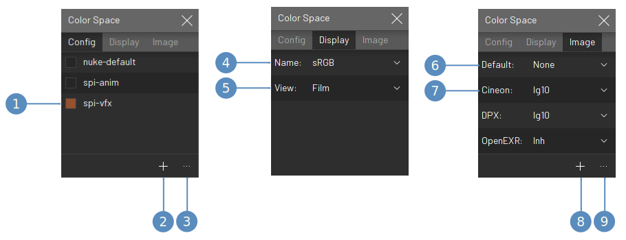
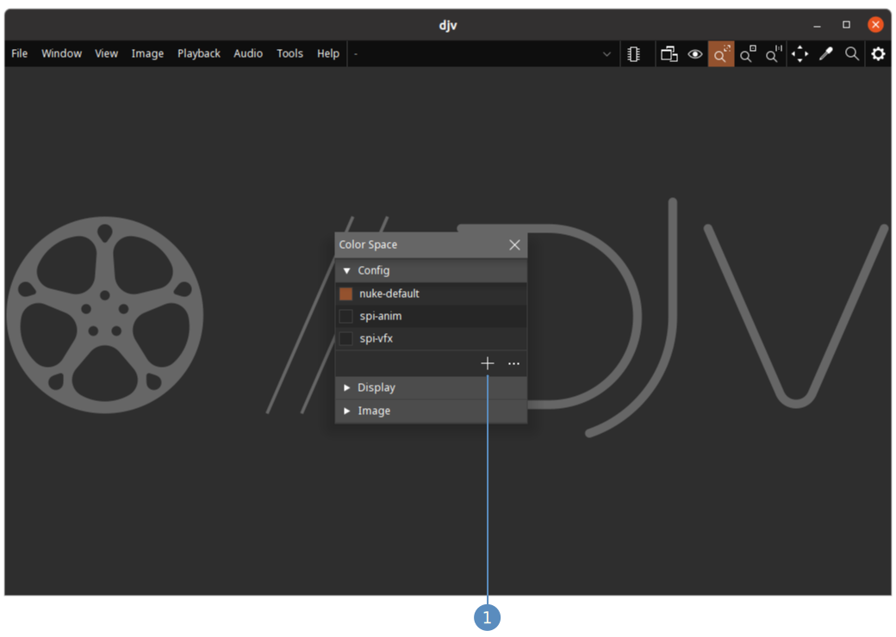
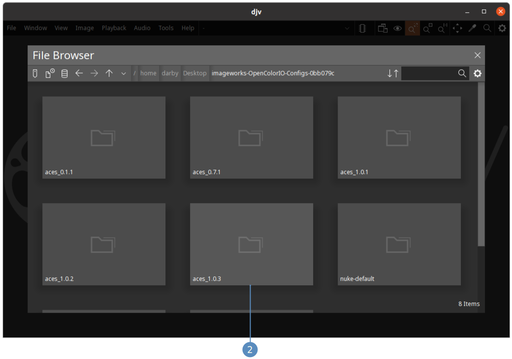
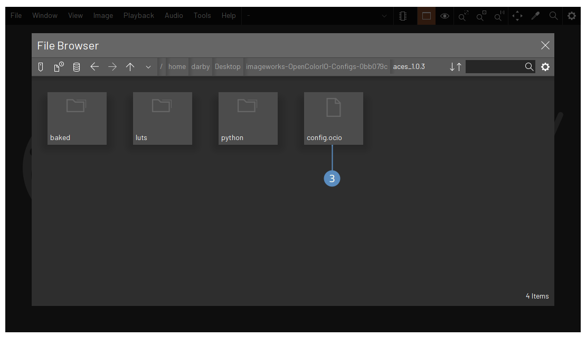
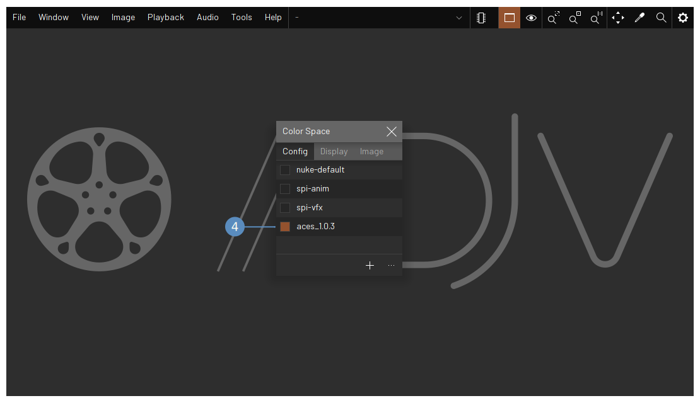
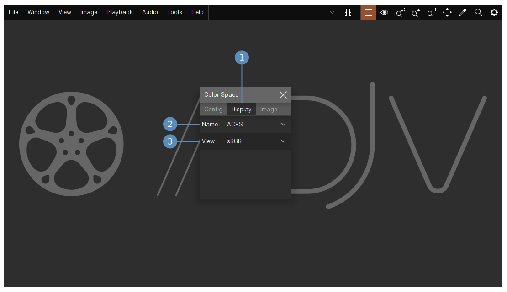
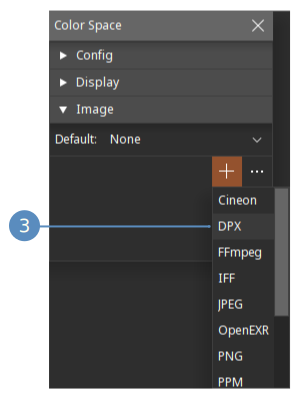
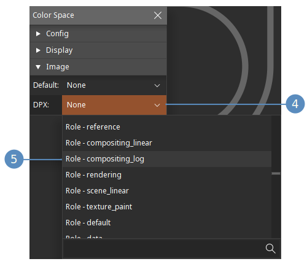
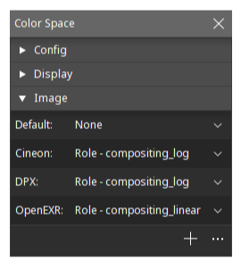

DJV uses the OpenColorIO
library for color management and includes a few of the sample color configurations.
Additional configurations, such as the ACES configurations, can be downloaded
here.
The color space widget allows you to configure color management
settings. By default it is configured with a few of the sample
configurations from OpenColorIO.
To open the color space widget:
- Open the "Image" menu
- Click the menu item "Color Space"
- The configuration tab
- The view tab
- The image tab

The "Config" tab allows you to set the active configuration,
and add or remove configurations. The "Display" tab allows you to
set the color space for the display. The "Image" tab allows you to
set the color space used for each file type.
- The active configuration
- Add a new configuration
- Edit the configurations
- The display color space
- The view color space
- The default color space for files
- A color space associated with a file type
- Add a new file type color space
- Edit the file type color spaces

Download the sample OCIO configurations, which include the ACES
configurations,
here.
Unpack the download to a location where you want to store the configurations,
and use the color space widget to add them:
- Open the color space widget and click the add configuration button
- Navigate to the directory where you unpacked the download, and click
on the directory with the ACES version you want to add.
- Click on the config.ocio file to add the configuration.
- The configuration is added and made current.




The display color space will automatically be set to the
defaults in the configuration. To change the color space click
on the color space name:
- Go to the display tab
- Set the display color space
- Set the view color space

Setup color spaces for the different file types:
- Go to the image tab
- Click the add color space button
- Choose a file type from the popup
- Click the color space button
- Choose a color space from the popup



Configure additional file types as needed:
